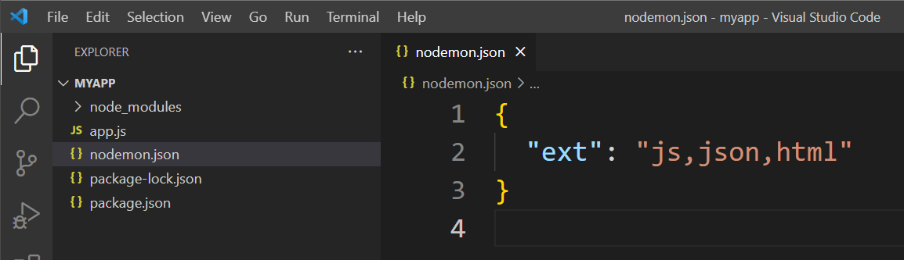

Nodemon is a tool that helps develop Node.js based applications by automatically restarting the node application when file changes in the directory are detected. This is very convenient because you don't have to go to the terminal and write `node app.js` everytime you want to see your changes in the browser.
1. To install nodemon globally run the following command in your terminal:
npm install -g nodemon
2. You are nowsd able to run your node/express app with the command `nodemon app.js`
3. Go to your app.js file and change the text in the
<h1> tag to `Hello Universe` and notice that the terminal
will output the following:
4. We can create a `nodemon.json` which controls which filestypes, if updated, will initialize a restart of the server. The image below shows what filetypes nodemon is looking for changes in:
